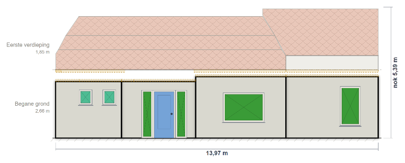

Exacte maten binnen handbereik
Wanneer u op een vlak, balk of rij klikt, verschijnt de bijbehorende maat, zoals netto m², b × h, windrichting, helling en begrenzing.
weScan levert voortaan een interactief BENG-detailsrapport bij uw energielabelproject. Elk geveldeel, dakvlak, vloerveld en iedere opening is getekend en aanklikbaar. Zo herleidt u maten en uitgangspunten tot op de m².
Het rapport is inbegrepen bij uw energielabelproject, zonder extra kosten.

Vanaf dag één draait weScan om twee dingen: transparantie en robuustheid. U meldt het label af op basis van de opname. Daarom moet de onderbouwing helder en controleerbaar zijn.
Het BENG-detailsrapport maakt de opname inzichtelijk. In de tekeningen klikt u door tot het geveldeel, de kozijnmaat en de regel waarop een toeslag is gebaseerd.
Bekijk het hele pand in één oogopslag: plattegrond, aanzicht, daken en vloeren als miniaturen. U ziet het verliesoppervlak per onderdeel; gevels, daken, vloeren en openingen. Plus een doorsnede van de schil en de constructietabel met Rc/U en isolatiekwaliteit. Klik op een deel van de balk voor de uitsplitsing per constructie.

Elk vlak heeft een eigen ‘paspoort’: een kaart met alle maten en regels. Daarin staat het netto verliesoppervlak met de rekenregel eronder (“bruto 37,31 − deelvlakken 8,51 m²”), de maten, de windrichting met azimut, de delen waaruit het geveldeel bestaat en elk deelvlak met kozijn en beglazing. De hoogte-toeslag van 10 cm, hart-op-hart gemeten ten opzichte van de verwarmde verdieping, staat apart vermeld.

Per zijde een echte opstand met dakpannen, kozijnen op hun plek, verdiepingslijnen met hoogte, breedtemaat en nokmaat. De kerngetallen bovenaan geven het bruto geveloppervlak, de windrichting met azimut en het aandeel ramen en deuren.

Verdiepingen uiteengetrokken, elk vlaktype in zijn eigen kleur: gevelvlak, dakvlak, vloerveld, raam, deur, dakraam en de hoogte-toeslag van 10 cm. Wat niet meetelt is doorzichtig, zodat de schil overblijft. Zo controleert u snel of alle onderdelen aanwezig zijn.

Het dakenplan toont van bovenaf de valrichting per vlak en de buitenmaat. Links staat de oriëntatieroos: dakoppervlak per windrichting, met de totalen eronder. Elk dakvlak heeft een paspoort met de werkelijke maat, in het dakvlak gemeten, een doorsnede op ware verhouding en de bijbehorende dakramen.

Elk vloerveld staat weergegeven met omtrek, buitenmaat en begrenzing: grond, kruipruimte, onverwarmde kelder of buitenlucht. Links de m² per begrenzing, zodat u in één blik ziet hoe het vloeroppervlak is verdeeld.

Van de opwekker naar elk tappunt wordt de horizontale afstand hemelsbreed bepaald en het verticale deel erbij opgeteld; de route loopt dus niet om wanden heen. Klik op een maatlabel voor de uitsplitsing in een horizontaal en verticaal deel. De norm en de herkomst van de lengte staan eronder vermeld.

Wanneer u op een vlak, balk of rij klikt, verschijnt de bijbehorende maat, zoals netto m², b × h, windrichting, helling en begrenzing.
De hoogte-toeslag van 10 cm staat als aparte band in de aanzichten en wordt in het paspoort toegelicht. U ziet over welke breedte en aan welke zijde de toeslag geldt, met de grondslag volgens ISSO 82.1. Ook de 11 cm-toeslag bij verwarmde belendingen staat apart vermeld bij gevels en vloeren.
U kunt het BENG-detailsrapport als één HTML-bestand in uw eigen projectdossier opslaan. Zo blijft de inhoudelijke onderbouwing van uw opname offline beschikbaar voor het bewijsdossier en een eventuele steekproefcontrole, ook jaren later.
Heeft u vragen of mist u iets? Reageer op deze e-mail. We horen graag wat u nodig heeft.